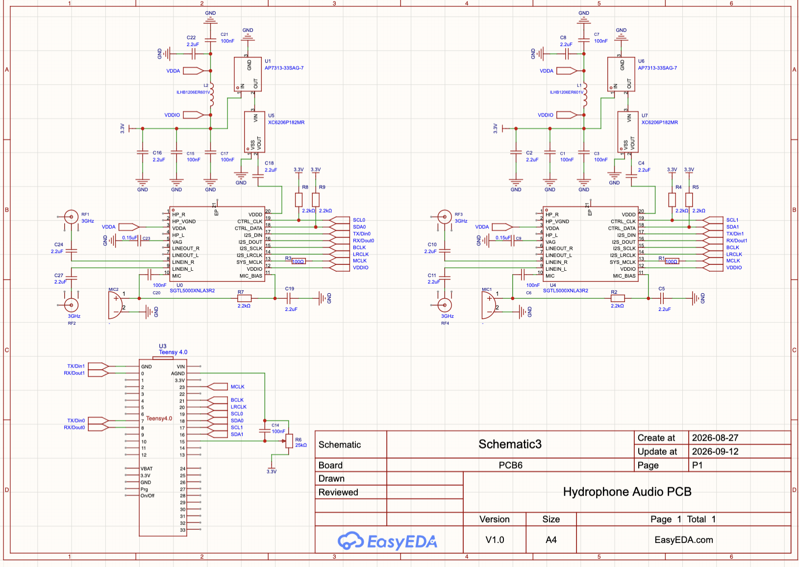
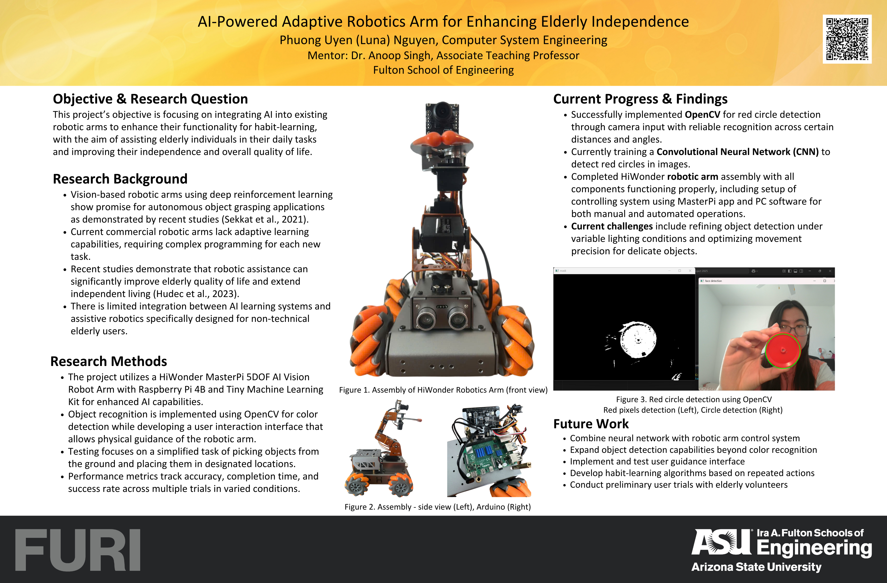

Embedded Systems
Bare-metal ARM Cortex-M0+, I2C sensors, PWM/TPM motor control, GPIO timing and hardware debugging.
CS ENGINEERING // EMBEDDED + RTL + ML
Computer Systems Engineering student focused on embedded systems, FPGA/RTL, PCB design, computer architecture, machine learning and robotics.
01 // SYSTEM OVERVIEW
Bare-metal ARM Cortex-M0+, I2C sensors, PWM/TPM motor control, GPIO timing and hardware debugging.
Verilog, Xilinx Vivado and multi-cycle MIPS processor design on Nexys A7 FPGA hardware.
PyTorch, TensorFlow, OpenCV, CNNs and U-Net segmentation for computer vision and remote sensing.
Linux kernel modules, gem5 architecture simulation, CUDA kernels and operating-system internals.
02 // FEATURED PROJECTS

P01FTW → U-Net
10% 20% 40%
60% 80% 100%
IoU ↑ labels ↓P02
P03FETCH → DECODE
EXEC → MEM
WRITEBACK
always @(posedge clk)P04I2C → COLOR
TPM2 → PWM
GPIO → ECHO
PID → MOTORSP05insmod module.ko
producer → queue
mmap → pages
BIO → block devP06MODULE A ⇄ MODULE B
HANDOFF → VERIFY
TIMING · SAFETY
TOLERANCE · SIGNALSP07Intel-sponsored interdisciplinary senior capstone characterizing robotic handoff behavior between modular semiconductor process equipment, including timing, safety, tolerances, positional teaching, interoperability and signal-level test methodology.
03 // RESEARCH
Undergraduate Researcher, Kerner Lab · Advisor: Dr. Hannah Kerner
Testing how training-set size affects field-boundary segmentation performance, then comparing uncertainty-based active learning with random sampling at equal labeling budgets.
04 // EXPERIENCE
Industry-sponsored capstone characterizing a robotic handoff protocol between modular semiconductor process equipment and developing test methodology and signal-monitoring tools with Intel's standards team.
ASU RoboSub competition team · Hydrophone PCB redesign, EasyEDA/JLCPCB workflow and computer-vision image annotation support.
Tutor students in mathematics, physics and chemistry while balancing research, capstone and engineering coursework.
Audit Salesforce records, manage reporting and spreadsheets, and work in PeopleSoft to maintain enrollment data integrity.
Led a seven-member interdisciplinary team building a real-time shelter-capacity tracking system using barcode scanning and Firebase.
Supported front-desk advising operations and managed Salesforce cases for student services.
05 // SKILL MATRIX
06 // TIMELINE
Started at Arizona State University, built early Arduino prototypes and helped create Diego's Journey, a first-prize Hacks for Humanity project.
Expanded into electrical fundamentals, engineering design and EPICS; built an award-winning Arduino rain gauge and irrigation-control prototype.
Conducted FURI robotic-arm research and built a computer-vision pipeline achieving approximately 87% object-detection accuracy.
Deepened work in FPGA/Verilog, circuits and algorithms while leading an EPICS engineering team and beginning work with ASU EdPlus.
Built across embedded microprocessors, operating systems, computer architecture and machine learning: FRDM-KL46Z robots, Linux kernel modules, MIPS/FPGA, gem5 simulations and CUDA.
Started an Intel-sponsored senior capstone characterizing robotic handoff protocols between modular semiconductor process equipment and developing signal-monitoring and test methodology.
Conducting funded FURI research in the Kerner Lab on data-efficient agricultural field segmentation using U-Net, Fields of the World and dataset-scaling / active-learning experiments.
Joined Desert WAVE's electrical team to redesign the RoboSub hydrophone PCB and support computer-vision dataset annotation.
Continue the Intel-sponsored capstone through characterization, testing, validation and final interdisciplinary engineering deliverables.
Computer Systems Engineering · Arizona State University.
07 // AWARDS
Fall 2026
Arizona State University
Diego's Journey
Scholarship recipient
08 // CONTACT
I'm interested in embedded systems, FPGA/RTL, computer architecture, ML for real-world systems and research-driven engineering.
Psst — press T to open the terminal.
{kind=link}
{kind=link}